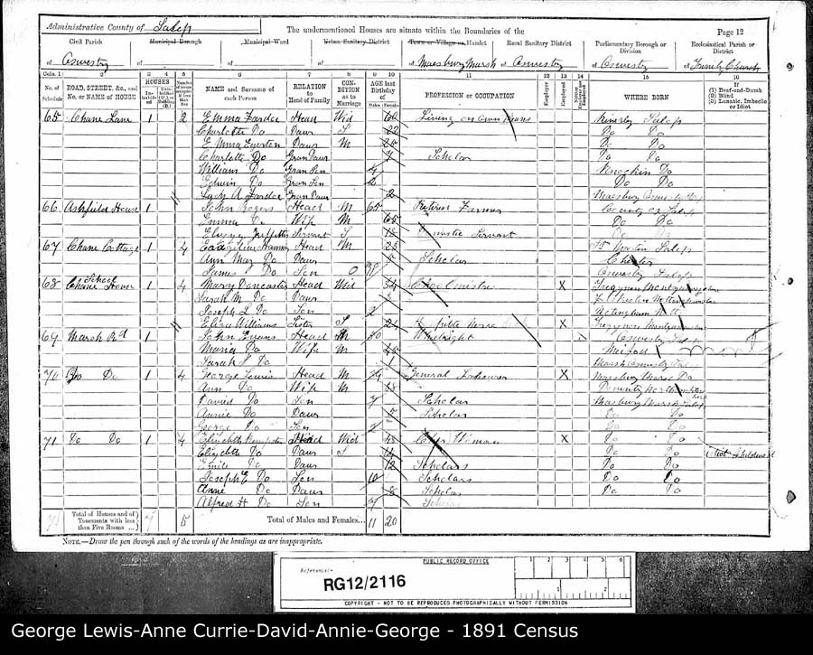

Attached To Ann CURRIE b. 25/02/1853 d. Between 1915 and 10/1915;
Annie LEWIS b. Between 04/1885 and 1886 d. 12/04/1971;
David LEWIS b. Between 04/1883 and 1884;
George LEWIS b. Between 04/1888 and 1889;
George LEWIS b. Between 1852 and 07/1852 d. Between 1935 and 07/1935
Web page generated using a registered copy of
GedScape software, licensed by Mark Watkin
Web page generated using a registered copy of GedScape software (www.gedscape.co.uk), licensed to Mark Watkin